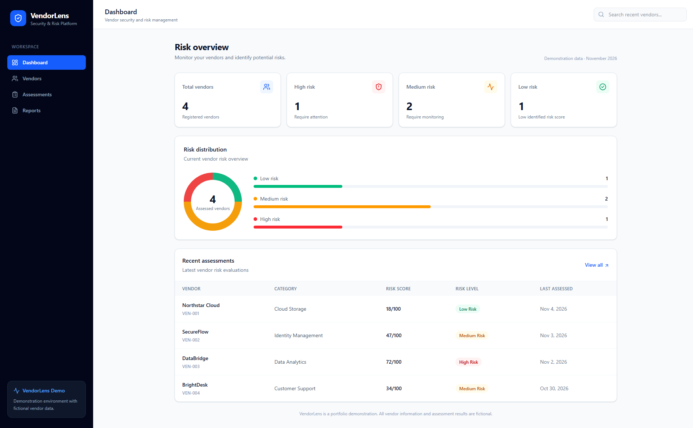
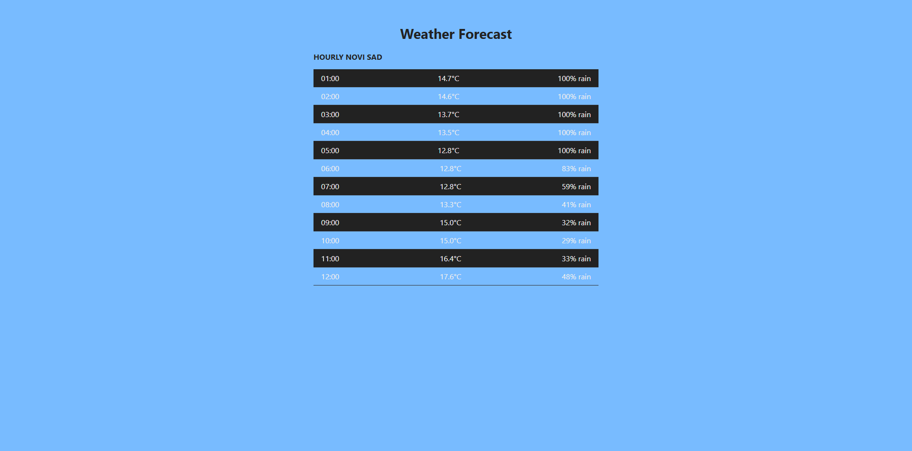

FEATURED PROJECTVendorLens
A web application for managing third-party vendors, assessing security and privacy risks, identifying control weaknesses, and generating risk reports.
Name: Robert Molnar
Address: Bulevar patrijaha Pavla 14E, Novi Sad, Serbia
Phone: +381631681384
Email: molnarrobert99@yahoo.com
In this role as an Information Security Analyst my focus was on risk assessment and security checks of various third-party applications, but I was also conducting security assessment of vendors related to a range of business areas:
Faculty of Technical Sciences, University of Novi Sad - Applied Software Engineering 2018 - Present
School of Electrotechnics, Mihajlo Pupin, Novi Sad - Electrotechnician of Information Technology (IT) 2014-2018

FEATURED PROJECTA web application for managing third-party vendors, assessing security and privacy risks, identifying control weaknesses, and generating risk reports.

WEB API PROJECTA lightweight weather forecast application that retrieves weather information using the Open-Meteo API. It displays current temperature, weather conditions and hourly forecasts for Novi Sad through a simple and accessible interface.